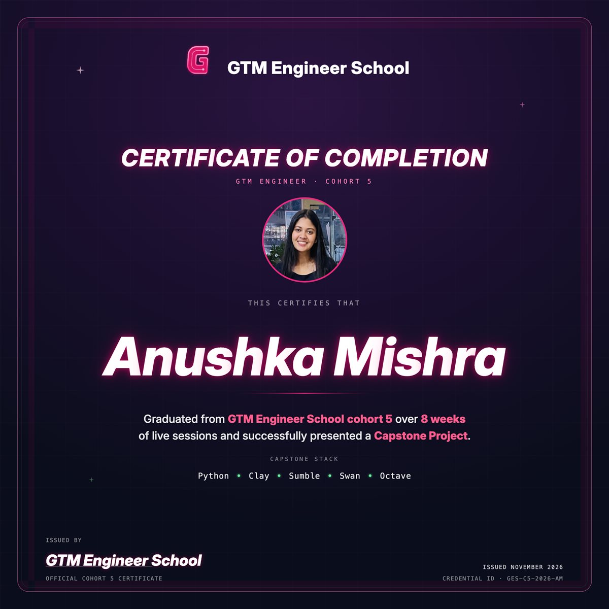

Inbound
Match, route, reply clock, draft and claims check for every enquiry, with a person approving each send. Built and demoed in my GTM Engineer School capstone.
Try the demo →GTM Engineer · GTM Engineer School, Cohort 5 · open to full-time roles
Now building inbound engines
Engineer turned analyst turned GTM engineer. I combine production engineering at Nagarro, revenue analytics, and a data-science master's at IIM Indore & IIT Indore to build systems that are fast, measurable and safe to trust.
What I build
I'm growing across the full GTM stack. Here is exactly where each lane stands today.
Match, route, reply clock, draft and claims check for every enquiry, with a person approving each send. Built and demoed in my GTM Engineer School capstone.
Try the demo →Working through the Clay outbound certification: signal-based sourcing, enrichment waterfalls, scoring and personalised sequences.
See credentials →Applying my forecasting and revenue-analysis background to campaign measurement: which triggers and messages actually book meetings.
See the analytics work →How I think
Pick a motion to see how data flows through it, and where a human stays in control.
Follow one signal
A buyer raises a hand. The engine records who, what and when, and nothing else.
EngineCheck fit and size band, then screen out do-not-contact, vendors and partners. Ineligible enquiries stop here.
EngineVersioned rules, not a language model, decide whose desk it lands on, and the reason is saved in plain English.
EngineA one-business-day deadline in Pacific time. If it slips, an alarm fires.
EngineWording comes from approved copy. A claims linter blocks prices, guarantees and unverified claims, and fails closed.
EngineThe engine never sends. Someone reads the draft, edits it and presses send.
HumanScroll to move the signal through the engine. Click a number to jump.
Interactive · inbound lane
Submit an invented enquiry and watch it matched, routed, put on a reply clock, drafted and safety-checked. A person always presses send. Edit the draft to trip the claims linter.
Proof
Four systems, each with the problem, what I built, and what changed.
Problem. Excess stock and stockouts at the same time, across 1,000+ SKUs.
Built. A Power BI dashboard plus a Python forecasting model on 3+ years of sales data. My manager and stakeholders acted on it.
Result. Demand-planning accuracy up from 60% to ~85%, excess stock −28%, stockouts −35%, $1M+ yearly profit impact.
Problem. Client catalogs (specs, pricing, categories, installations) arrived as XML that differed from our database in names, structure, units and gaps. Reconciling by hand took about a month.
Built. Validates every field, repairs structural drift, parks records that need client feedback, and loads the clean rest.
Result. One full load in 4 hours at most. Still used by the team today.
Problem. Quote, order, provisioning, usage, billing and revenue lived in separate internal systems.
Built. SQL extracts and Power BI / Excel / Access reporting that compared customer revenue with carrier cost, flagging services where cost weakened profitability for pricing review.
Result. ~20% less effort on recurring KPI reporting and a consistent view for pricing and monetization decisions.
Problem. Slow, uneven replies to buyers who already raised a hand.
Built. Match, route, reply clock, draft and claims linter, wired through a CRM, with a person approving every send.
Result. A drafted reply inside one business day or an alarm fires. Built for an early-stage enterprise-AI company; applauded at Demo Day.
Impact, drawn
Outer ring: before (60%). Inner ring: after (~85%). Forecasting models on 3+ years of sales data across 1,000+ SKUs.
Drawn to scale: the automated bar is a sliver, under 1% of the manual one. Validation, repair of structural drift and parking of records that need client feedback are all included.
Nagarro inventory optimization and Orange Business Services KPI reporting.
Architecture
Deterministic where it must be, generative only where it is safe. No language model decides a route.
Judgment
Given the approved draft to polish, it dropped the slot a person must fill, removed the briefing ask, added a question of its own and changed a claim. My guards refused every rewrite, so the approved template stayed the draft. That is the guard working.
| Approved draft | AI rewrite |
|---|---|
| Reviewer slot to answer their question | Gone |
| 30-minute briefing ask | Gone |
| — | New closing question |
| "gates that can refuse" | "…refuse entry" (claim changed) |
I compared two revenue sources across 110 companies. For public companies they agreed closely (78% within 10%, 90% in the same revenue band). For non-profit health systems they diverged widely, most likely because one filing covers a single legal entity and the other a whole system. I flagged that as a hypothesis to verify, not a fact.
Share of companies within 10% across the two sources.
Tested on invented enquiries with five pieces of fundamental feedback handled (four changed the project, one I pushed back on with a reason). No real user has tried it yet, because the client's site had no inbound traffic and real data needed written permission. I would rather say that than inflate it.
Tools I've used
Only tools I have actually used, with where I used them.
Credentials

8 weeks of live sessions and a capstone project presented at Demo Day. Capstone stack: Python, Clay, Sumble, Swan and Octave. Issued November 2026. Credential ID GES-C5-2026-AM.
Building signal-based outbound workflows in Clay. I'll publish the result here when it is complete.
About
I started as a full-stack engineer (.NET, Angular, SQL) building configurators for 30,000+ SKUs. I moved into analytics because the best engineering question is usually a business question: where is money leaking? I then went deep on revenue-versus-cost at a telecom, and now I am completing an MS in Data Science & Management at IIM Indore and IIT Indore.
GTM engineering is where those threads meet: systems thinking, clean data, and a measurable commercial outcome.
I will bring the systems thinking, the data discipline and the guardrails. Tell me the revenue problem.